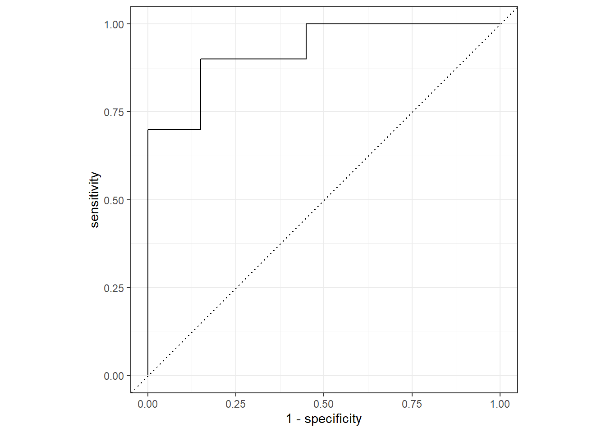

set.seed(20220840)
ca125_1 <- c(rnorm(10,80,20),rnorm(20,50,10))
ca125_2 <- c(rnorm(10,20,20),rnorm(20,70,10))
class=c(rep(1:0,c(10,20)))
tumor <- c(rep(c("癌症","非癌症"),c(10,20)))
df <- data.frame(`class`=class,`ca125_1`=ca125_1,`ca125_2`=ca125_2,
`tumor`=tumor
)
psych::headTail(df)
## class ca125_1 ca125_2 tumor
## 1 1 51.88 5.96 癌症
## 2 1 82.46 10.59 癌症
## 3 1 113.67 -19.22 癌症
## 4 1 63.49 6.08 癌症
## ... ... ... ... <NA>
## 27 0 53.33 74.34 非癌症
## 28 0 59.92 51.11 非癌症
## 29 0 46.46 64.21 非癌症
## 30 0 30.03 66.5 非癌症29 R语言计算AUC(ROC)注意事项
上面的文章中介绍了ROC曲线的本质以及两面性，并详细介绍了如何手动计算真阳性率/假阳性率，以及怎样计算多个，并把点连接成线，变成ROC曲线。
这些现在都有成熟的R包可以帮我们搞定，不需要我们手动计算。
不过这些包在计算AUC时，默认是计算阳性结果的AUC，这在实际情况中有时会遇到问题，大家在使用时最好手动指定，到底是计算谁的AUC，关于ROC的两面性，可以参考上面的推文。
这里以我最常用的ROCR和pROC进行演示。
29.1 准备数据
假如我们要用ca125的值预测患者是不是癌症，虚构一个数据：
29.2 ROCR
ROCR的使用非常简单，两步完成，需要提供用来预测结果的指标以及真实结果。
关于这个包计算的阳性结果的AUC还是阴性结果的AUC，它的规则是这样的：
ROCR默认计算顺序靠后的类别的AUC。如果提供给labels的值是有序因子型变量，排在前面的默认是阴性结果（negtive），排在后面的默认是阳性结果（positive），默认计算阳性结果（排序靠后）的AUC。如果是无序因子、数值、字符、逻辑型变量，会按照R语言的默认排序，比如按照数字大小、首字母顺序等，也是计算排序靠后的类别的AUC。
比如我们这个df数据集，其中的tumor这一列是字符型，默认的顺序是：癌症，非癌症，是按照首字母顺序排列的，因此在计算AUC时，默认是计算的非癌症的AUC。
library(ROCR)
pred <- prediction(predictions = ca125_1, # 预测指标
labels = tumor # 真实结果
)
performance(pred, "auc")@y.values[[1]]
## [1] 0.075但是大多数时候我们需要的都是阳性结果（比如这里我们想计算癌症的AUC，而不是非癌症）的AUC，所以我建议大家在使用R包计算AUC或者画ROC曲线时，手动指定顺序！
pred <- prediction(predictions = ca125_1, # 预测指标
labels = tumor # 真实结果
,label.ordering = c("非癌症","癌症") # 此时就是计算癌症的AUC
)
performance(pred, "auc")@y.values[[1]]
## [1] 0.92529.3 pROC
library(pROC)pROC包计算AUC也需要：用来预测结果的指标以及真实结果。
这个包计算pROC略有不同，它是根据中位数来的，谁的中位数大，就计算谁的AUC，比如我们的这个例子，计算下中位数看看：
# 把ca125_1按照tumor的两个类别进行分组，然后分别计算中位数
tapply(ca125_1, tumor, median)
## 癌症 非癌症
## 81.34426 49.99926结果是癌症组的中位数＞非癌症组的中位数，所以是计算癌症的AUC。
计算AUC：
roc(response=tumor, predictor=ca125_1)
## Setting levels: control = 癌症, case = 非癌症
## Setting direction: controls > cases
##
## Call:
## roc.default(response = tumor, predictor = ca125_1)
##
## Data: ca125_1 in 10 controls (tumor 癌症) > 20 cases (tumor 非癌症).
## Area under the curve: 0.925再来看看ca125_2这一列指标：
# 把ca125_2按照tumor的两个类别进行分组，然后分别计算中位数
tapply(ca125_2, tumor, median)
## 癌症 非癌症
## 13.52771 69.69272结果是癌症组的中位数＜非癌症组，所以是计算非癌症的AUC。
roc(response=tumor, predictor=ca125_2)
## Setting levels: control = 癌症, case = 非癌症
## Setting direction: controls < cases
##
## Call:
## roc.default(response = tumor, predictor = ca125_2)
##
## Data: ca125_2 in 10 controls (tumor 癌症) < 20 cases (tumor 非癌症).
## Area under the curve: 0.9如果想要手动指定，需要设置levels和direction：
# 此时计算的就是癌症的AUC
roc(response=tumor, predictor=ca125_2,
levels=c("非癌症", "癌症"), # 这个顺序随便设定，重要的是direction
direction = "<" # 手动设定非癌症 < 癌症
)
##
## Call:
## roc.default(response = tumor, predictor = ca125_2, levels = c("非癌症", "癌症"), direction = "<")
##
## Data: ca125_2 in 20 controls (tumor 非癌症) < 10 cases (tumor 癌症).
## Area under the curve: 0.129.4 yardstick
最后给大家演示下yardstick包的做法，其中truth必须提供因子型，使用event_level指定到底是计算谁的AUC：
df$tumor <- factor(df$tumor,levels = c("癌症","非癌症"))
library(yardstick)
roc_auc(data = df,
tumor,
ca125_1,
event_level="first")
## # A tibble: 1 × 3
## .metric .estimator .estimate
## <chr> <chr> <dbl>
## 1 roc_auc binary 0.925画ROC曲线：
yardstick::roc_curve(df, truth=tumor,
ca125_1,
event_level="first") |>
ggplot2::autoplot()
R语言中的ROC曲线R包都有这样的潜规则，大家在使用的时候一定要注意哦~
示例数据还提供了用数值表示的结果变量class，感兴趣的可以试试看，是不是和我说的一样！